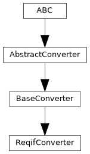

pyTRLCConverter.reqif_converter
Converter to ReqIF format.
Author: Andreas Merkle (andreas.merkle@newtec.de)
Classes
ReqifConverter provides functionality for converting to ReqIF format. |
Module Contents
- class pyTRLCConverter.reqif_converter.ReqifConverter(args: Any)[source]
Bases:
pyTRLCConverter.base_converter.BaseConverter
ReqifConverter provides functionality for converting to ReqIF format.
- _append_hierarchy(spec_object_identifier: str, level: int, long_name: str, is_container: bool) None[source]
Append a new ReqIFSpecHierarchy node at the given nesting level.
The internal hierarchy stack is pruned so the new node is correctly attached either as a child of the current parent or as a root entry.
- Parameters:
spec_object_identifier (str) – Identifier of the spec-object this hierarchy node references.
level (int) – TRLC nesting level (0 = top-level).
long_name (str) – Display name for the hierarchy node.
is_container (bool) – If True, keep the new hierarchy node on the stack as a parent.
- static _apply_table_options(html_text: str, table_options: dict) str[source]
Apply table rendering options to generated HTML.
Replaces the plain
<table>tag with one carrying astyleattribute when"border"is set, and injects astyleattribute into every<th>tag when"headingStyle"is set. Values are HTML-escaped before insertion.- Parameters:
html_text (str) – HTML string produced by the Markdown renderer.
table_options (dict) – Table options with optional keys
"border"(str) and"headingStyle"(str), both interpreted as CSS style values.
- Returns:
HTML string with table styling applied.
- Return type:
str
- _build_reqif_bundle() reqif.reqif_bundle.ReqIFBundle[source]
Assemble a complete ReqIFBundle from the accumulated spec objects, hierarchies and attribute definitions.
- Returns:
The assembled ReqIF bundle ready for unparsing.
- Return type:
ReqIFBundle
- _build_spec_relations() list[reqif.models.reqif_spec_relation.ReqIFSpecRelation][source]
Build ReqIF spec relations from queued TRLC record references.
- Returns:
Resolved ReqIF spec relations.
- Return type:
list[ReqIFSpecRelation]
- _bundle_as_reqifz(doc_name: str, reqif_xml: str) None[source]
Create the document subfolder, write the .reqif, and bundle into a .reqifz archive.
The subfolder is named after the document and placed inside the output folder. All files inside the subfolder are included in the archive with paths relative to the subfolder root.
- Parameters:
doc_name (str) – Document base name (no extension).
reqif_xml (str) – Serialised ReqIF XML content.
- static _collect_enum_values_from_expression(value: trlc.ast.Expression) list | None[source]
Collect TRLC enumeration literal names from a field expression.
- Parameters:
value (Expression) – The TRLC field expression.
- Returns:
List of literal name strings, or None if the expression is null or unsupported.
- Return type:
Optional[list]
- _copy_external_files(dest_dir: str) None[source]
Copy all collected external files to the given destination directory.
Each file is copied using its basename as the destination file name. Duplicate source paths are copied only once. If a source file cannot be read, an error is logged and the file is skipped.
- Parameters:
dest_dir (str) – Destination directory path.
- _create_enum_attribute(type_key: str, definition_key: str, long_name: str, literal_names: list, enum_type: trlc.ast.Enumeration_Type) reqif.models.reqif_spec_object.SpecObjectAttribute[source]
Create a SpecObjectAttribute of type ENUMERATION for the given ReqIF spec-object type.
- Parameters:
type_key (str) – Internal key of the owning ReqIF spec-object type.
definition_key (str) – Internal dictionary key used to look up or create the attribute definition.
long_name (str) – Human-readable attribute name registered in the spec-object type.
literal_names (list) – List of TRLC enumeration literal names for the attribute value.
enum_type (Enumeration_Type) – The TRLC enumeration type.
- Returns:
The created attribute.
- Return type:
SpecObjectAttribute
- _create_spec_object(item_name: str, type_key: str, type_long_name: str, attribute_value_map: dict[str, dict[str, Any]]) reqif.models.reqif_spec_object.ReqIFSpecObject[source]
Create a ReqIFSpecObject for the given ReqIF type and field attributes.
- Parameters:
item_name (str) – Name of the TRLC item used as the spec-object long-name.
type_key (str) – Internal key of the ReqIF spec-object type.
type_long_name (str) – Human-readable long-name of the ReqIF spec-object type.
attribute_value_map (dict[str, dict[str, Any]]) – Mapping from field key to
{"long_name": ..., "value": ...}for each dynamic field attribute.
- Returns:
The created and registered spec-object.
- Return type:
ReqIFSpecObject
- _create_string_attribute(type_key: str, definition_key: str, long_name: str, value: str) reqif.models.reqif_spec_object.SpecObjectAttribute[source]
Create a SpecObjectAttribute of type STRING for the given ReqIF spec-object type.
- Parameters:
type_key (str) – Internal key of the owning ReqIF spec-object type.
definition_key (str) – Internal dictionary key used to look up or create the attribute definition.
long_name (str) – Human-readable attribute name registered in the spec-object type.
value (str) – String attribute value.
- Returns:
The created attribute.
- Return type:
SpecObjectAttribute
- _create_xhtml_attribute(type_key: str, definition_key: str, long_name: str, xhtml_value: str) reqif.models.reqif_spec_object.SpecObjectAttribute[source]
Create a SpecObjectAttribute of type XHTML, ensuring the corresponding attribute definition exists.
- Parameters:
type_key (str) – Internal key of the owning ReqIF spec-object type.
definition_key (str) – Internal dictionary key used to look up or create the attribute definition.
long_name (str) – Human-readable attribute name registered in the spec-object type.
xhtml_value (str) – XHTML-wrapped content string.
- Returns:
The created attribute.
- Return type:
SpecObjectAttribute
- _ensure_attribute_definition(type_key: str, definition_key: str, long_name: str, attribute_type: reqif.models.reqif_types.SpecObjectAttributeType) str[source]
Return the identifier of an existing attribute definition, or create and register a new one.
- Parameters:
type_key (str) – Internal key of the owning ReqIF spec-object type.
definition_key (str) – Internal dictionary key for the attribute definition.
long_name (str) – Human-readable name to assign when creating a new definition.
attribute_type (SpecObjectAttributeType) – ReqIF attribute type.
- Returns:
The attribute definition identifier.
- Return type:
str
- _ensure_enum_attribute_definition(type_key: str, definition_key: str, long_name: str, enum_type: trlc.ast.Enumeration_Type) str[source]
Return the identifier of an existing ATTRIBUTE-DEFINITION-ENUMERATION, or create and register a new one.
- Parameters:
type_key (str) – Internal key of the owning ReqIF spec-object type.
definition_key (str) – Internal dictionary key for the attribute definition.
long_name (str) – Human-readable name to assign when creating a new definition.
enum_type (Enumeration_Type) – The TRLC enumeration type.
- Returns:
The attribute definition identifier.
- Return type:
str
- _ensure_enum_datatype(enum_type: trlc.ast.Enumeration_Type) str[source]
Return the identifier of an existing DATATYPE-DEFINITION-ENUMERATION, or create and register a new one.
ENUM-VALUE keys are assigned as consecutive integers starting at 0, in the order the literals are declared in the RSL enumeration.
- Parameters:
enum_type (Enumeration_Type) – The TRLC enumeration type.
- Returns:
The datatype definition identifier.
- Return type:
str
- _ensure_spec_object_type(type_key: str, long_name: str) str[source]
Return the identifier of an existing ReqIF spec-object type, or create and register a new one.
- Parameters:
type_key (str) – Internal dictionary key for the spec-object type.
long_name (str) – Human-readable name to assign when creating a new type.
- Returns:
The spec-object type identifier.
- Return type:
str
- _ensure_spec_relation_type(relation_type_key: str, long_name: str) str[source]
Return the identifier of an existing ReqIF spec-relation type, or create and register a new one.
- Parameters:
relation_type_key (str) – Internal dictionary key for the spec-relation type.
long_name (str) – Human-readable relation type name.
- Returns:
The spec-relation type identifier.
- Return type:
str
- _file_name_trlc_to_reqif(file_name_trlc: str) str[source]
Convert a TRLC file name to a ReqIF file name.
- Parameters:
file_name_trlc (str) – TRLC file name
- Returns:
ReqIF file name
- Return type:
str
- _flush_pending_hierarchy() None[source]
Flush a deferred record hierarchy node as a standalone leaf.
When a record is processed its hierarchy insertion is deferred so that a following section can promote it to a container instead. Call this method before inserting any new node (record or section) that must not consume the pending record.
- static _get_datatype_identifier(attribute_type: reqif.models.reqif_types.SpecObjectAttributeType) str[source]
Return the datatype definition identifier for the given ReqIF attribute type.
- Parameters:
attribute_type (SpecObjectAttributeType) – ReqIF attribute type.
- Returns:
Matching datatype definition identifier.
- Return type:
str
- static _get_field_enum_type(record: trlc.ast.Record_Object, field_name: str) trlc.ast.Enumeration_Type | None[source]
Return the TRLC Enumeration_Type for the named field, or None if it is not an enum field.
Traverses the component hierarchy including inherited components.
- Parameters:
record (Record_Object) – The TRLC record object.
field_name (str) – The field name to look up.
- Returns:
The enumeration type, or None.
- Return type:
Optional[Enumeration_Type]
- _get_record_type_key(record: trlc.ast.Record_Object) str[source]
Return the ReqIF type key for the given TRLC record.
- Parameters:
record (Record_Object) – The record object.
- Returns:
ReqIF type key derived from the TRLC record type.
- Return type:
str
- static _get_reqif_timestamp() str[source]
Return the current UTC time as a ReqIF-compatible ISO 8601 timestamp.
- Returns:
ISO 8601 timestamp string (UTC, no microseconds).
- Return type:
str
- _get_spec_object_type_identifier(type_key: str) str[source]
Return the identifier of the requested ReqIF spec-object type.
- Parameters:
type_key (str) – Internal dictionary key for the spec-object type.
- Returns:
The spec-object type identifier.
- Return type:
str
- _get_trlc_ast_walker() pyTRLCConverter.trlc_helper.TrlcAstWalker[source]
Create and configure a TrlcAstWalker for traversing TRLC record field values.
- Returns:
The configured TRLC AST walker.
- Return type:
- _markdown_to_xhtml(markdown_text: str, gfm_mode: bool, table_options: dict | None = None) str[source]
Convert Markdown text to an XHTML-wrapped string using marko.
If
table_optionsis provided and non-empty, table styling is applied to the generated HTML before wrapping (see_apply_table_options()).- Parameters:
markdown_text (str) – Markdown source text.
gfm_mode (bool) – If True, use the GFM extension; otherwise use CommonMark.
table_options (Optional[dict]) – Optional table rendering options with keys
"border"and/or"headingStyle".
- Returns:
XHTML-wrapped HTML string.
- Return type:
str
- _new_identifier(prefix: str) str[source]
Generate a unique identifier by combining the given prefix with an auto-incrementing counter.
- Parameters:
prefix (str) – Identifier prefix (e.g.
"spec-object"or"hierarchy")- Returns:
Unique identifier string.
- Return type:
str
- _on_implict_null(_: trlc.ast.Implicit_Null) str[source]
Process the given implicit null value.
- Returns:
The configured empty attribute value.
- Return type:
str
- _on_record_reference(record_reference: trlc.ast.Record_Reference) str[source]
Process the given record reference value.
- Parameters:
record_reference (Record_Reference) – The record reference value.
- Returns:
String representation of the referenced record.
- Return type:
str
- _on_string_literal(string_literal: trlc.ast.String_Literal) str[source]
Process the given string literal value.
- Parameters:
string_literal (String_Literal) – The string literal value.
- Returns:
The string literal value.
- Return type:
str
- _other_dispatcher(expression: trlc.ast.Expression) str[source]
Dispatcher for all other expressions.
- Parameters:
expression (Expression) – The expression to process.
- Returns:
The processed expression.
- Return type:
str
- _path_to_xhtml(file_path: str) str[source]
Convert a file path to a ReqIF XHTML
<object>element and schedule the file for copying.The file is referenced locally by its basename. The MIME type is determined from the file extension; if unknown,
application/octet-streamis used. Iffile_pathis empty the value is rendered as plain text instead.- Parameters:
file_path (str) – Path to the external file (may be relative or absolute).
- Returns:
XHTML-wrapped
<object>element string.- Return type:
str
- _plain_text_to_xhtml(plain_text: str) str[source]
Convert plain text to an XHTML-wrapped string.
Blank-line-separated paragraphs are wrapped in
<p>tags; single newlines within a paragraph become<br/>elements.- Parameters:
plain_text (str) – Plain text to convert.
- Returns:
XHTML-wrapped content string.
- Return type:
str
- _queue_spec_relation(source_record: trlc.ast.Record_Object, record_reference: trlc.ast.Record_Reference, relation_name: str) None[source]
Queue a ReqIF spec relation derived from a TRLC record reference.
- Parameters:
source_record (Record_Object) – Source record containing the reference.
record_reference (Record_Reference) – Referenced target record.
relation_name (str) – TRLC field name that defines the relation type.
- _queue_spec_relations_from_expression(source_record: trlc.ast.Record_Object, expression: trlc.ast.Expression, relation_name: str) bool[source]
Queue ReqIF spec relations from a TRLC expression if it consists of record references.
- Parameters:
source_record (Record_Object) – Source record containing the reference expression.
expression (Expression) – TRLC field expression to inspect.
relation_name (str) – TRLC field name that defines the relation type.
- Returns:
True if the expression was handled as one or more record references.
- Return type:
bool
- _render(package_name: str, type_name: str, attribute_name: str, attribute_value: str) str[source]
Render an attribute value to an XHTML-wrapped string based on the render configuration.
If the attribute is configured as CommonMark Markdown, it is converted via marko. If configured as GFM, it is converted with the GFM extension. If configured as XHTML, the value is passed through as-is inside the XHTML wrapper. If configured as path, the value is treated as a file path and converted to an XHTML
<object>element; the file is scheduled for copying to the output folder. Otherwise plain text is HTML-escaped and wrapped.For Markdown and GFM formats, optional table rendering options (
border,headingStyle) from the render configuration are applied to the generated HTML.- Parameters:
package_name (str) – TRLC package name of the record.
type_name (str) – TRLC type name of the record.
attribute_name (str) – Attribute field name.
attribute_value (str) – Raw attribute value string.
- Returns:
XHTML-wrapped content string.
- Return type:
str
- _reset_document_state(title: str) None[source]
Reset all per-document state.
- Parameters:
title (str) – The document title used as the specification long-name.
- static _sanitize_identifier_token(value: str) str[source]
Sanitize an identifier token for stable ReqIF identifiers.
- Parameters:
value (str) – Raw identifier token.
- Returns:
Sanitized lowercase token.
- Return type:
str
- static _wrap_xhtml(fragment: str) str[source]
Wrap an HTML fragment in a ReqIF-compatible XHTML div element.
- Parameters:
fragment (str) – Inner HTML fragment.
- Returns:
XHTML-wrapped string.
- Return type:
str
- _write_document(file_name: str) pyTRLCConverter.ret.Ret[source]
Build the ReqIF bundle and write it to the output file.
Without –reqifz the .reqif file is written directly into the output folder. With –reqifz a subfolder named after the document is created inside the output folder, the .reqif file is placed there, and all files inside that subfolder are bundled into a .reqifz archive in the output folder.
- Parameters:
file_name (str) – Output file name (without path prefix).
- Returns:
Status
- Return type:
- begin() pyTRLCConverter.ret.Ret[source]
Begin the conversion process.
- Returns:
Status
- Return type:
- convert_record_object_generic(record: trlc.ast.Record_Object, level: int, translation: dict | None) pyTRLCConverter.ret.Ret[source]
Convert a record object generically to a ReqIF spec-object.
- Parameters:
record (Record_Object) – The record object.
level (int) – The record level.
translation (Optional[dict]) – Translation dictionary for the record object. If None, no translation is applied.
- Returns:
Status
- Return type:
- convert_section(section: str, level: int) pyTRLCConverter.ret.Ret[source]
Process the given section item as a named SPEC-HIERARCHY container.
The section reuses the last processed TRLC record’s SPEC-OBJECT as the mandatory SPEC-OBJECT-REF in the SPEC-HIERARCHY node (the ReqIF v1.2 schema requires minOccurs=1). The section title is carried by the hierarchy node’s LONG-NAME. No dedicated section SPEC-OBJECT is created.
If no record has been processed yet, the section name is used as the document title (specification long-name) for the very first such section. Any further section without a preceding record emits a warning and is skipped.
- Parameters:
section (str) – The section name
level (int) – The section indentation level
- Returns:
Status
- Return type:
- enter_file(file_name: str) pyTRLCConverter.ret.Ret[source]
Enter a file and reset document state in multiple document mode.
- Parameters:
file_name (str) – File name
- Returns:
Status
- Return type:
- finish() pyTRLCConverter.ret.Ret[source]
Finish the conversion process and write the output in single document mode.
- Returns:
Status
- Return type:
- static get_description() str[source]
Return converter description.
- Returns:
Converter description
- Return type:
str
- static get_subcommand() str[source]
Return subcommand token for this converter.
- Returns:
Parser subcommand token
- Return type:
str
- leave_file(file_name: str) pyTRLCConverter.ret.Ret[source]
Leave a file and write the ReqIF document in multiple document mode.
- Parameters:
file_name (str) – File name
- Returns:
Status
- Return type:
- classmethod register(args_parser: Any) None[source]
Register converter specific argument parser.
- Parameters:
args_parser (Any) – Argument parser
- ATTRIBUTE_KEY_RECORD_FOREIGN_ID = 'foreignID'
- DATATYPE_STRING_IDENTIFIER = 'datatype-string'
- DATATYPE_XHTML_IDENTIFIER = 'datatype-xhtml'
- EMPTY_ATTRIBUTE_DEFAULT = ''
- OUTPUT_FILE_NAME_DEFAULT = 'output.reqif'
- REQIF_VERSION = '1.0'
- SPECIFICATION_TYPE_IDENTIFIER = 'specification-type-trlc'
- SYSTEM_ATTRIBUTE_PREFIX = 'ReqIF.'
- TOP_LEVEL_DEFAULT = 'Specification'
- XSI_NAMESPACE = 'http://www.w3.org/2001/XMLSchema-instance'
- _attribute_definitions_by_type
- _document_title = 'Specification'
- _enum_datatype_registry
- _external_files: list = []
- _hierarchy_stack = []
- _id_counter = 0
- _last_spec_object_identifier: str | None = None
- _markdown_renderer_gfm
- _markdown_renderer_md
- _out_path
- _pending_hierarchy_args: tuple | None = None
- _pending_relations = []
- _root_hierarchies = []
- _spec_object_identifier_by_record
- _spec_object_type_info
- _spec_objects = []
- _spec_relation_type_info
- _spec_relations = []
- _spec_title_captured: bool = False